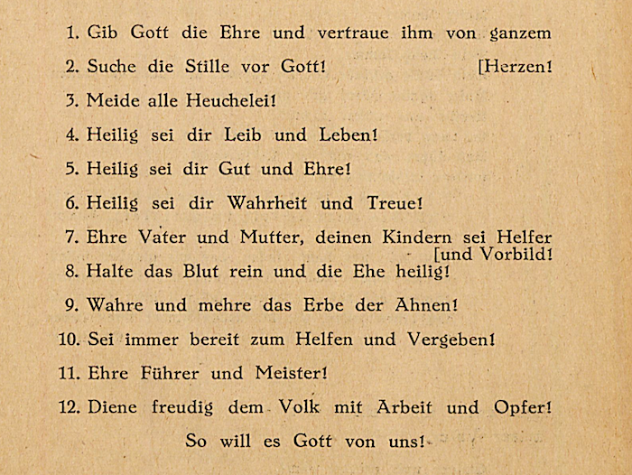
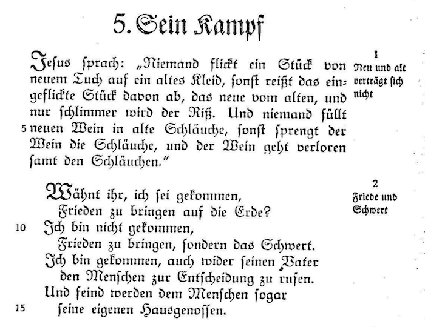

2023-08-12 08:00
Today’s culture wars are being fought by supposed followers of Jesus. But the version of Jesus they revere is not the man of miracles and multitudes who showed compassion for a woman about to be stoned to death. For Christian Nationalists the canonical Jesus is a lamentable “woke” sissy who would turn the other cheek, look for the best in people, oppose exploitation, and feed the hungry. As for that adulterous woman he pitied, they’d stone her to death in a second if the hangman’s rope were not the preferred tool of their vigilantism.
Instead, the version of Jesus that Christian Nationalists prefer is the vengeful killer from Revelations 19:13, riding in on a war horse, robe dripping with blood, eyes blazing with fury, sword slashing, bronze boots stomping to death anyone who ever got in his way.
Anthea Butler, theologian, professor, and author of “White Evangelical Racism,” described in an interview with Political Research Associates how Evangelicals became politicized by religious crusades starting in the Forties:
“As early as the 1940s, Billy Graham had fused Christianity with patriotism and White supremacy. His goal was to make believers—including Black and Brown folks who had started to listen to him—conform to White, male, Western Christian ideals. He demonized Communists, Catholics, and immigrants. Interestingly, he got support from William Randolph Hearst’s Los Angeles Examiner, which gave these ideas added prominence. […] American exceptionalism—the idea that the U.S. is blessed by God—as well as Christian patriotism were used by Billy Graham, the Rev. Bob Jones, and other White male religious leaders of the mid-20th Century to put parameters around what it meant to be an American and a Christian. It does lead directly to MAGA.”
In a 2021 the centrist Christian magazine Christianity Today (CT) published Christian Nationalism is Worse than You Think. Written one week after the MAGA coup attempt, CT interviewed Paul D. Miller, a professor of international affairs at Georgetown University, who contrasted Christian Nationalism with Christianity:
“It’s easiest to define Christian nationalism by contrasting it with Christianity. Christianity is a religion. It’s a set of beliefs about ultimate things: most importantly, about the life, death, and resurrection of Jesus Christ. It’s drawn from the Bible, from the Nicene Creed, and the Apostles’ Creed. [] Christian nationalism is a political ideology about American identity. It is a set of policy prescriptions for what the nationalists believe the American government should do. It’s not drawn from the Bible. It draws political theory from secular philosophy and their own version of history as well.”
And the “Worse than you think” part Miller discussed happens to be fascism.
Samuel L. Perry and Andrew L. Whitehead are co-authors of the book, Taking America Back for God: Christian Nationalism in the United States. In the run-up to the 2020 election, writing in Religion in Public, the two observed that “Christian Nationalism Talks Religion, But Walks Fascism.”
Perry and Whitehead frequently, and correctly, place “Christian” and “Christianity” in quotes because Christian Nationalism “represents more of an ethno-cultural and political identity that denotes a specific constellation of religious affiliation (evangelical Protestant), cultural values (conservative), race (white), and nationality (American-born citizen)” than religious orthodoxy.
Working from the definition of fascism in Jason Stanley’s How Fascism Works, there are obvious similarities:
“an ideology built on reference to a mythic past; populist support for strongman demagogues; a culture of anti-intellectualism, including anti-education and anti-science beliefs; an ideology that views social hierarchies as normal and necessary; idealization of patriarchal families; peace maintained by authoritarian “law & order” tactics; strongly pro-nativist/anti-pluralism; foments cultural anxiety about sexual deviance; and pervasive victim mentality.”
In a piece titled Beware of Authoritarian Christians New England United Methodist minister Rev. William Alberts highlights the authoritarian dynamics within Christian Nationalism. Much of the racism, sexism, and homophobia in authoritarian “Christianity” indeed have roots in scripture, both Old and New Testament. While churches have always been free to highlight the good and ignore the bad in their own traditions and scripture, sometimes they just pivot from bad to bad. But this is done for political purpose.
Albert quotes Civil Rights leader Gilbert Caldwell, who explains how Christian Nationalists pivoted from racism to homophobia: “White traditionalists in 1972 realized they could no longer use the Bible to justify the segregation of blacks in the ‘new’ UMC. Thus same-gender loving persons and their ‘practice of homosexuality’ provided them the opportunity to continue to discriminate, not because of race but because of sexual orientation.”
In all of this, love and Jesus are missing, Alberts says, replaced by Christian Nationalists’ insistence on authority, doctrine, discipline, obedience, and literal interpretation. In contrast, Alberts cites the loving Jesus in John 13:35 who expresses the essence of normative Christianity: “By this everyone will know that you are my disciples, if you love one another.”
Russell Moore, former evangelical and editor in chief of Christianity Today, told NPR that a number of evangelical pastors have told him that when they’ve quoted Jesus in the Sermon on the Mount, with its reference to “turning the other cheek,” congregants would come up to them and ask, “Where did you get those liberal talking points?” When the pastor replied, “I’m literally quoting Jesus Christ,” the response was, “Yes, but that doesn’t work anymore. That’s weak.”
What those “followers of Jesus” prefer is the vengeful warrior from Revelations. The one who promises, “If you go after me, I’m coming after you.” The one who promises to “start slitting throats” the day he’s inaugurated. Romans 12:19 says, “avenge not yourselves, but rather give place unto wrath: for it is written, Vengeance is mine; I will repay, saith the Lord.”
Trump the Redeemer
While normative Christianity teaches that vengeance is the Lord’s, Christian Nationalists had no problem hearing Trump telling his Believers, “In 2016, I declared: I am your voice. Today, I add: I am your warrior. I am your justice. And for those who have been wronged and betrayed: I am your retribution.” It’s no surprise that many Trump supporters actually believe Trump is the messiah (see this and this and this and this and this).
In 2019 Christianity Today published an editorial entitled “Trump Should be Removed from Office.” It argued that Trump’s actions were illegal, unconstitutional, and immoral; that his Twitter feed was a “near perfect example” of a human being “morally lost and confused.”
Greater Boston interviewed Evangelicals to get their take on the editorial. Andrew Beckwith of the Christian Nationalist Massachusetts Family Institute was unconcerned about Trump’s crimes or immorality. Beckwith’s view was that as long as Trump delivered to the 200 Evangelicals he mentioned, it was all for the greater good. His criterion was abortion, saying evangelicals had to weigh Trump’s three ex-wives against 60 million “murdered children.” Beckwith ended his Trump apologetics by quipping that MFI was above partisan politics, even democracy, saying that “Jesus was a monarchist” who was the “King of Kings, Lord of Lords.” As if authoritarianism were Jesus-approved.
But Beckwith isn’t the only proto-fascist to be less interested in the “Prince of Peace” than the “Lord of Lords.”
In the Thirties it occurred to Germany’s National Socialist regime that, besides Jews, Jewish books needed to be destroyed. You can find countless archive photos of book burnings that show the scope of the Nazi destruction. Poetry, art, philosophy, history, and literature books were all consigned to the flames if they had a Jewish author.
But then it occurred to the National Socialists that the book most “Jewish” of all was The Bible. In 1939 the Institute for the Study and Eradication of Jewish Influence on German Church Life (Institut zur Erforschung und Beseitigung des jüdischen Einflusses auf das deutsche kirchliche Leben) was founded, with symbolic purpose, in Eisenach, where Luther (that other notorious anti-semite) translated the Bible into Hochdeutsch.
The goal of the Institute was to produce a Bible that no longer contained the Old Testament or any of the “Jewish” elements in the New Testament. Susannah Heschel, a Jewish scholar at Dartmouth College, wrote a fascinating account of this in “Reading Jesus as a Nazi” and expanded her research into a book, The Aryan Jesus. The Nazi Institute with the ambitious goal of de-Judaizing the Bible produced two documents: one was a replacement for the New Testament, Die Botschaft Gottes (The Message of God). The other was a catechism called Deutsche mit Gott (Germans with God) which was distributed widely to soldiers during the war.
This presented the dilemma of what to do about the very popular Ten Commandments, which had been given to a Jewish guy on a mountain top and which had a whole dramatic backstory involving the arc of poorly-behaved Jews becoming worthy of receiving the Law.

The Nazi “Twelve Commandments”
A replacement would just have to do. Where the Torah offered butter, Deutsche mit Gott offered margarine. Because Moses and his tablets were streng verboten, the revisionist catechism offered its own set of replacement commandments – twelve in number: (1) Honour God and believe in him wholeheartedly; (2) Seek out the peace of God; (3) Avoid all hypocrisy; (4) Holy is your health and life; (5) Holy is your wellbeing and honour; (6) Holy is your truth and fidelity; (7) Honour your father and mother - your children are your aid and your example; (8) Keep the blood pure and your honour holy; (9) Maintain and multiply the heritage of your forefathers; (10) Be ready to help and forgive; (11) Honour your Führer and master; (12) Joyously serve the people with work and sacrifice.
Like its American cousin, German Christian Nationalism polluted religious teachings with virulent nationalism. Section 7 of Deutsche mit Gott is called Gottes Vorsehung in der Geschichte der Völker (God’s Providence in the History of Nations) and is so cringeworthy that a translation is in order (mine): “According to the eternal plan, God directs the history of the races, nations and man in their rise and fall. He decrees tasks and awakens strength through leaders and masters. God has given us Germans the Reich as a sacred mission. In the course of history, base thoughts, wild passions and destructive powers oppose divine rule. Through all these threats, God leads us to his goals and creates his eternal Reich.”
Religion in the service of nationalist ideology
This may very well be National Socialism speaking, but similar verbiage and sentiment is found in the “sacred mission” of American exceptionalism, Manifest Destiny, the Puritans’ “City on a Hill,” Zionism, Hindutva, Chinese Han nationalism, and in every colonial empire throughout history that sought to bring its “god-given” values to weaker, “inferior” “shithole” nations, which would elevate humanity through conquest and genocide.
The Botschaft was of course stripped of the Old Testament, but Christian scholars have noticed how, particularly, the Sermon on the Mount was rewritten to make Jesus less an effeminate woke wimp and more the bloody warrior. A review of Heschel’s book The Aryan Jesus by John Connelly in the Catholic Commonweal magazine summarizes the revisions to Jesus 2.0:
By contrast, when the “German Christians” got to work de-Judaizing Christianity, they found Scripture so full of positive references to Judaism that they had to rewrite it. In 1940 Grundmann and his associates published their own, bowdlerized version of the Bible, called The Message of God (Die Botschaft Gottes). Missing from it were the Old Testament, John’s Gospel, and all references to Jesus as servant or lamb of God. The institute argued that supposedly original understandings of Christ as warrior had predominated “in a lost original Gospel whose message had been distorted.” Thus the Sermon on the Mount appeared, but with no blessing for the merciful. In the hands of Grundmann and his colleagues, Christian teaching was warped to fit Nazi obsessions: the need to meet hatred with hatred; the virtues of manliness; and above all, the dark powers of the Jews to subvert the German people. Where Paul was a solution for anti-Nazis, as a Jew he was a problem for Christian racists, who argued that he “distorted” an originally Hellenic Christianity. In 1942 Grundmann proclaimed that “a German faith cannot be based upon Paul, because it would be deformed by his Jewish system of coordinates.” Two years later a Thuringian pastor called for removing Paul altogether in order to focus faith upon Jesus, who had gone to death “in battle against Judaism.” The hierarchy rejected these calls—fearing that such radical revisions would bolster the arguments of those who said that German Christians were not really Christian—and postponed them until some future time after the war had been won.
This emphasis on “Christian soldiers” is reflected in the Botschaft. One page is particularly illustrative.

Section 5 is titled Sein Kampf (his fight, which you would not be wrong to assume invokes Mein Kampf). The first lines are taken from Mark 2:21-23, widely interpreted as Christianity replacing Judaism. The reader summary in the right column (“new and old are incompatible”) makes that plain. The text reads (my translation): “Jesus spoke: No one sews a piece of unshrunken cloth on an old garment. Otherwise the patch tears away from it, the new from the old, and a worse tear is made. And no one puts new wine into old wineskins. Otherwise the wine will burst the skins and the wine is destroyed, and so are the skins.” The Nazi censors omitted the last verse: “But new wine is for fresh wineskins.” Understandable, since against their own advice they were putting new wine in old wineskins.
This is followed by a verse from Matthew 10:34-36, where Jesus has gathered his disciples to say goodbye. This Jesus is not the Prince of Peace but the Lord of vengeance (my translation): “Do you think that I have come to bring peace to the earth? I have not come to bring peace, rather the sword. I have come to call man to account, even against his father. And even members of his own household will become enemies to man.” Here the Nazi editors censored Jesus: “For I am come to raise up man against his own father and the daughter against her mother and the daughter-in-law against her mother-in-law.” This might have been too much for the Third Reich’s family values.
If you think American Christian Nationalism would never go to such extreme lengths – rewriting scripture to distort the message of a religion of love – think again. Long before the Nazis did it, as Anthea Butler shows us, Southern Christianity transformed Christianity from a religion of peace into a religion of master, slave, punishment and obedience. Slavery’s leading apologists were predominantly clergymen.
Today a vast army of self-appointed “prophets,” “intercessors,” preachers, influencers, talking heads, “patriots,” and megachurch pastors reshape, distort, censor, edit, and transform Christianity into an unrecognizable goulash of hate and authoritarianism. Political power is their god, and “sincere religious belief” is a convenient Constitutional shield for systematically creating a theocracy from the corpse of Jeffersonian democracy.
For the moment this extremist minority has the wind in their sails and the Supreme Court in their pocket. I hope what’s left of our democracy will survive their assaults.